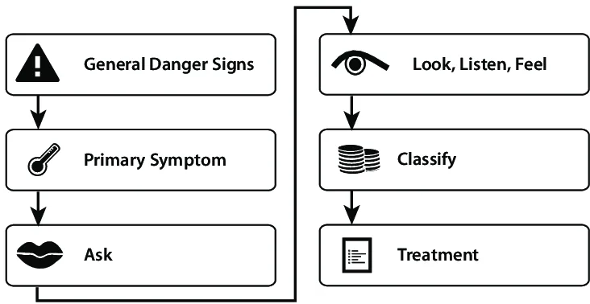
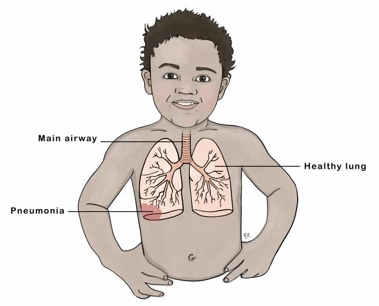
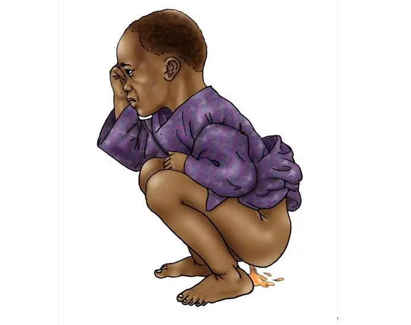
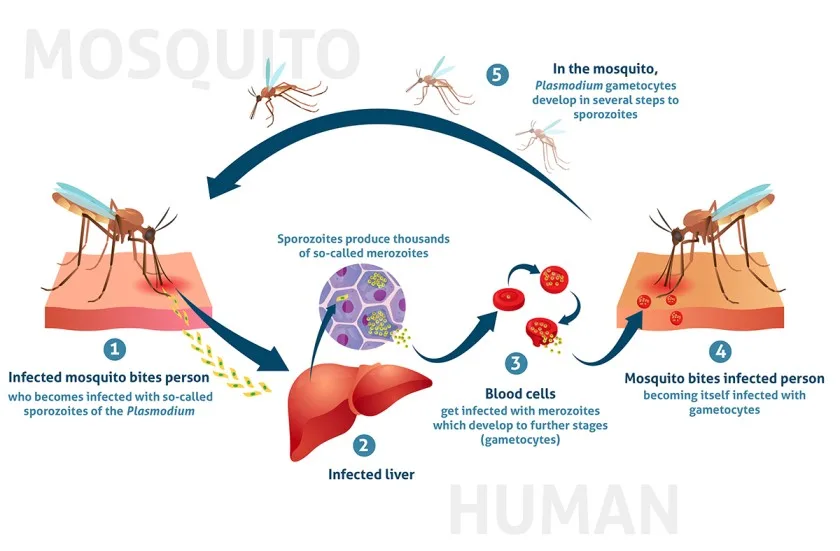
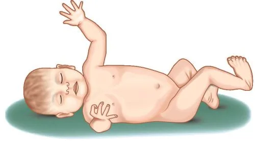
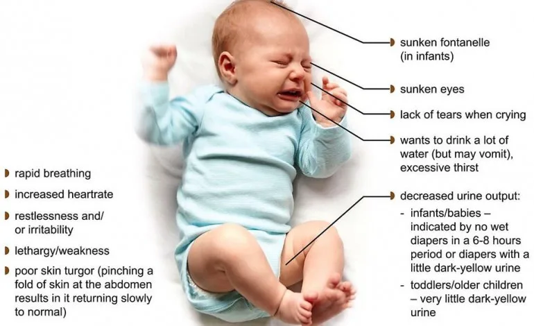
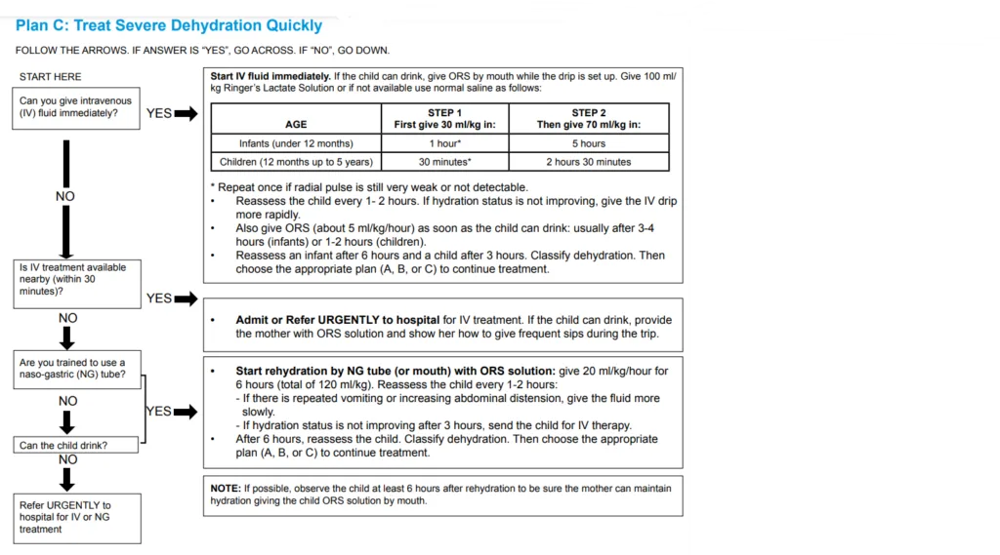

Expanded Nursing Uganda Explanation
Treat the Child should be reviewed through safe maternal and newborn assessment, early recognition of danger signs, respectful communication and timely referral. Connect the definition to vital signs, bleeding, fetal or newborn wellbeing, patient education and local protocol requirements.
Contents, 23 sections (tap to expand)
01 TREAT THE CHILD
- CARRY OUT THE TREATMENT STEPS IDENTIFIED ON THE ASSESS AND CLASSIFY CHART.
- TEACH THE MOTHER TO GIVE ORAL DRUGS AT HOME
Follow the instructions below for every oral drug to be given at home
Also, follow the instructions listed with each drug’s dose
- Determine the appropriate drugs & dosage for the child’s age or weight.
- Tell the mother the reason for giving the drug to the child.
- Demonstrate how to measure the dose.
- Watch the mother practice measuring a dose by herself.
- Ask the mother to give the first dose to her child.
- Explain carefully how to give the drug, then label & package the drug.
- If more than one drug will be given, collect, count & package each drug separately.
- Explain that all the oral drugs – tablets or syrup must be used to finish the course of treatment, even if the child gets better.
- Check the mother’s understanding before she leaves the clinic.
Give an appropriate oral antibiotic**
02 FOR PNEUMONIA, ACUTE EAR INFECTION:
FIRST-LINE ANTIBIOTIC : Oral Amoxicillin
- Age or Weight Amoxicillin(Give two times daily for 5 days)
- 2 months up to 12 months (4 – <10 kg) 1 tablet (250 mg) or 5 ml syrup
- 12 months up to 3 years (10 – <14 kg) 2 tablets (250 mg) or 10 ml syrup
- 3 years up to 5 years (14-19 kg) 3 tablets (250 mg) or 15 ml syrup
03 FOR PROPHYLAXIS IN HIV CONFIRMED OR EXPOSED CHILD:
ANTIBIOTIC FOR PROPHYLAXIS : Oral Cotrimoxazole
- Age Cotrimoxazole(Give once a day starting at 4-6 weeks of age)
- Less than 6 months 2.5 ml syrup
- 6 months up to 5 years 5 ml syrup or 2 tablets (20/100 mg)
04 FOR DYSENTERY:
FIRST-LINE ANTIBIOTIC: Oral Ciprofloxacin
- Age Ciprofloxacin(Give 15 mg/kg two times daily for 3 days)
- Less than 6 months 1/2 tablet (250 mg)
- 6 months up to 5 years 1 tablet (250 mg) or 1/2 tablet (500 mg)
05 FOR CHOLERA:
FIRST-LINE ANTIBIOTIC FOR CHOLERA: Erythromycin
SECOND-LINE ANTIBIOTIC FOR CHOLERA : Tetracycline
- Age or Weight Erythromycin Tetracycline
- 2 years up to 5 years (10 – 19 kg) 1 tablet (250 mg) 1 tablet (250 mg)
Give four times daily for 3 days
06 FOR UNCOMPLICATED MALARIA
FIRST-LINE ANTIMALARIAL : ARTEMETHER + LUMEFANTRINE (AL)
SECOND-LINE ANTIMALARIAL : DIHYDROARTEMISININ-PIPERAQUINE (DHA-PPQ)
Artemether + Lumefantrine Tablets Dosage
- Weight (kg) Age (Years) AL Dosage
- Below 15 Below 3 20mg Artemether and 120mg Lumefantrine
- 15 – 24 3 – 7 40mg Artemether and 240mg Lumefantrine
Counsel the Mother or Caregiver on Malaria Management for a Sick Child:
- Show caregivers how to prepare the dispersible tablet.
- If vomiting within 30 minutes, repeat the dose; if persistent, return for review.
- Explain the dosing schedule and confirm understanding.
- Emphasize completing all 6 doses over 3 days, even if the child feels better.
- Follow up after 3 days of treatment.
- Advise immediate return if the condition worsens or symptoms persist after 3 days.
SECOND LINE : DIHYDROARTEMISININ 20MG + PIPERAQUINE 160MG
Dihydroartemisinin + Piperaquine Dosage
- Body Weight (kg) Dose (mg)
- 5 to < 8 20 + 160
- 8 to <11 30 + 240
- 11 to < 17 40 + 320
07 FOR SEVERE MALARIA
FIRST-LINE TREATMENT FOR SEVERE MALARIA : ARTESUNATE
Artesunate is provided as a powder accompanied by a 1ml vial of 5% bicarbonate. The preparation involves further dilution with either normal saline or 5% dextrose, with the specific amounts varying for intravenous (IV) or intramuscular (IM) administration (refer to the table below).
Preparing IV/IM Artesunate
- Component IV IM
- Artesunate Powder (mg) 60mg 60mg
- Sodium Bicarbonate (mls, 5%) 1ml 1ml
- Normal Saline or 5% Dextrose (mls) 5mls 2mls
- Artesunate Concentration (mg/ml) 10mg/ml 20mg/ml
Note:
- Artesunate is administered IV/IM for a minimum of 24 hours.
- Do not use water for injection in the preparation.
- Do not administer if the solution appears cloudy.
- Administer artesunate within 1 hour after preparation.
After 24 hours of artesunate administration, if the child can eat and drink, transition to a full course of artemisinin combination therapy (ACT), typically the first-line oral anti-malarial, Artemether Lumefantrine.
Quinine for Severe Malaria
For Intravenous (IV) Infusion:
- Typically, use 5% or 10% dextrose.
- Administer at least 1ml of fluid for each 1mg of quinine.
- Do not exceed an infusion rate of 5mg/kg/hour.
- Utilize 5% dextrose or normal saline for infusion, maintaining a ratio of 1ml of fluid for each 1mg of quinine.
- The 20mg/kg loading dose should take 4 hours or longer.
- The 10mg/kg maintenance dose should take 2 hours or longer.
For Intramuscular (IM) Quinine:
- Take 1ml of the 2mls in a 600mg Quinine sulfate IV vial and add 5mls water for injection, creating a 50mg/ml solution.
- For a loading dose, administer 0.4mls/kg.
- For maintenance dosing, administer 0.2mls/kg.
- If more than 3mls is needed (for a child over 8kg for a loading dose or over 15kg for maintenance doses), divide the dose into two IM sites, ensuring not to exceed 3mls per injection site.
Artemether for Severe Malaria
- Administer a loading dose of 3.2mg/kg IM stat, followed by 1.6mg/kg IM daily until the patient can tolerate oral medications.
- Subsequently, provide a complete course of Artemether Lumefantrine (AL).
Admit or refer patients with:
- Severe anemia (Hemoglobin level <5g/dl or hematocrit <15%)
- Two or more convulsions within a 24-hour period.
- Hyperparasitemia and stability. These patients can be treated with AL, DHA-PPQ, or oral quinine if ACT is unavailable, but close monitoring is essential.
Treatment for Severe Malaria in Children with Very Severe Febrile Disease:
For Pre-referral Treatment:
Check available pre-referral treatment options ( rectal artesunate suppositories, artesunate injection, or quinine ).
If rectal artesunate suppository is available: Insert the first dose and urgently refer the child.
If intramuscular artesunate or quinine is available: Administer the first dose and urgently refer the child to the hospital.
If Referral is Not Possible:
For Artesunate Injection:
- Administer the first dose intramuscularly.
- Repeat the dose every 12 hours until the child can take oral medication.
- Provide the full dose of oral antimalarial as soon as the child can take it orally.
For Artesunate Suppository:
- Administer the first dose of the suppository.
- Repeat the same dose every 24 hours until the child can take oral antimalarial.
- Provide the full dose of oral antimalarial as soon as the child can take it orally.
For Quinine:
- Administer the first dose of intramuscular quinine.
- Ensure the child remains lying down for one hour.
- Repeat quinine injection at 4 and 8 hours later, then every 12 hours until the child can take an oral antimalarial.
- Do not continue quinine injections for more than 1 week.
- If the risk of malaria is low, refrain from giving quinine to a child less than 4 months of age.
- Age or Weight Rectal Artesunate Suppository (50 mg suppositories, Dosage 10 mg/kg) Rectal Artesunate Suppository (200 mg suppositories, Dosage 10 mg/kg) Intramuscular Artesunate(60 mg vial, 20mg/ml, 2.4 mg/kg) Intramuscular Quinine (150 mg/ml, in 2 ml ampoules)* Intramuscular Quinine (300 mg/ml, in 2 ml ampoules)*
- 2 – 4 months (4 – <6 kg) 1 1/2 ml 0.4 ml 0.2 ml
- 4 – 12 months (6 – <10 kg) 2 1 ml 0.6 ml 0.3 ml
- 12 months – 2 years (10 – <12 kg) 2 1.5 ml 0.8 ml 0.4 ml
- 2 – 3 years (12 – <14 kg) 3 1 1.5 ml 1.0 ml 0.5 ml
- 3 – 5 years (14 – 19 kg) 3 1 2 ml 1.2 ml 0.6 ml
*Note: Dosages are given in milliliters (ml) and milligrams per kilogram (mg/kg) based on the child’s weight or age.
GIVE PARACETAMOL FOR HIGH FEVER >38.5 ° c OR EAR PAIN
Paracetamol for Fever or Ear Pain:
- AGE or WEIGHT Paracetamol Tablet (100 mg) Paracetamol Tablet (500 mg)
- 2 months up to 3 years (4 – <14 kg) 1/4 tablet every 6 hours Not applicable
- 3 years up to 5 years (14 – <19 kg) 1/2 tablet every 6 hours 1/2 tablet every 6 hours
08 FOR CONVULSIONS
Give Diazepam to Stop Convulsions
- Turn the child to his/her side and clear the airway. Avoid putting things in the mouth.
- Give 0.5mg/kg diazepam injection solution per rectum using a small syringe without a needle (like a tuberculin syringe) or using a catheter.
- Check for low blood sugar, then treat or prevent.
- Give oxygen and REFER.
If convulsions have not stopped after 10 minutes, repeat diazepam dose.
Diazepam Dosage
- Age or Weight Diazepam 10mg/2mls Dosage
- 2 months – 6 months (5 – 7 kg) 0.5 ml
- 6 months – 12 months (7 – <10 kg) 1.0 ml
- 12 months – 3 years (10 – <14 kg) 1.5 ml
- 3 years – 5 years (14-19 kg) 2.0 ml
Note: Dosages are given in milliliters (ml) based on the child’s weight or age.
For measles, persistent diarrhea, severe malnutrition **
- Give vit A- 3 doses:
- Give two doses for treatment of Measles. Give the first dose in the clinic and give mother another dose to give at home the next day.
- Give one dose for other disease conditions if the child has not had a dose in the previous one month.
- Give one dose as per Vitamin A schedule for prevention.
- To give Vitamin A, cut open the capsule and give drops
- Ask mother to bring the child back for 3rd dose 2-4 wks
- Age Range 200,000 IU Capsule 100,000 IU Capsule 50,000 IU Capsule
- Up to 6 months Not applicable 1/2 capsule 1 capsule
- 6 months up to 12 months 1/2 capsule 1 capsule 2 capsules
- 12 months up to 5 years 1 capsule 2 capsules 4 capsules
For anemia***
Iron and Folate Administration Guidelines
- Dosage : Give one dose at 6 mg/kg of iron daily for 14 days.
- Caution : Avoid iron in a child known to suffer from Sickle Cell Anemia.
- Note : Avoid folate until 2 weeks after the child has completed the dose of sulfa-based drug s.
Iron/Folate Tablet Dosage Based on Age or Weight
- Age or Weight Ferrous Sulfate 200 mg + 250 mcg Folate Iron Tablet (200 mg) Folic Acid Tablet (5 mg)
- 2 up to 4 months (4 – 6 kg) – 1/4 1/2
- 4 up to 12 months (6 – 10 kg) – 1/4 1
- 12 months up to 3 years(10 – 14 kg) 1/2 tablet 1/2 1
- 3 years up to 5 years(14 – 19 kg) 1/2 tablet 1/2 1
**Zinc Sulphate Administration for Diarrhea:
- Dosage : Give once daily for 10 days.
- Age Zinc Sulphate Dispersible Tablet (20 mg)
- 0 months up to 6 months 1/2*
- 6 months up to 5 years 1
*Dispose the other half tablet of Zinc Sulphate 20mg
Deworm **
Give mebendazole if:
- Give 500 mg mebendazole as a single dose in clinic if:
- hookworm/whipworm are a problem in children in your area, and
- the child is 1 years of age or older, and
- the child has not had a dose in the previous 6 months
- If a child is below 2yrs- give 250mg
Treat the Child to Prevent Low Blood Sugar
If the child is able to breastfeed:
- Ask the mother to breastfeed the child.
If the child is not able to breastfeed but is able to swallow:
- Give expressed breast milk or a breast-milk substitute.
If neither of these is available, give sugar water*.
- Give 30 – 50 ml of milk or sugar water* before departure.
If the child is not able to swallow:
- Give 50 ml of milk or sugar water* by nasogastric tube.
If no nasogastric tube is available, give 1 teaspoon of sugar moistened with 1-2 drops of water sublingually and repeat doses every 20 minutes to prevent relapse.
* To make sugar water: Dissolve 4 level teaspoons of sugar (20 grams) in a 200-ml cup of clean water.
09 TEACH THE MOTHER TO TREAT LOCAL INFECTIONS AT HOME
- Explain to the mother what the treatment is and why it should be given.
- Describe the treatment steps listed.
- Watch the mother as she does the first treatment in the clinic.
- Tell her how often to do the treatment at home.
- Check the mother’s understanding before she leaves the clinic.
10 Treat eye infection with tetracycline eye ointment
Clean both eyes 3 times daily:
Wash hands.
- Ask the child to close eyes.
- Use a clean cloth & water to gently wipe away the pus.
Apply tetracycline eye ointment in both eyes 4 times daily:
- Ask the child to look up.
- Squirt a small amount of the ointment on the inside of the lower eyelid.
- Wash hands again.
- Treat until there is no pus discharge.
- Do not use other eye ointments or drops or put anything else in the eye.
11 Dry the ear by wicking
- Clear the Ear by Dry Wicking and Give Ear Drops*
- Dry the ear at least 3 times daily.
- Roll clean absorbent cloth or soft, strong tissue paper into a wick.
- Place the wick in the child’s ear.
- Remove the wick when wet.
- Replace the wick with a clean one and repeat these steps until the ear is dry.
- Instill quinolone ear drops after dry wicking three times daily for two weeks.
* Quinolone ear drops may include ciprofloxacin, norfloxacin, or ofloxacin.
12 Treat mouth ulcers with gentian violet
- Treat for mouth ulcers twice daily.
- Wash hands.
- Wash the child’s mouth with clean soft cloth wrapped around the finger and wet with salt water.
- Paint the mouth with half-strength gentian violet (0.25% dilution).
- Wash hands again.
- Continue using GV for 48 hours after the ulcers have been cured.
- Give paracetamol for pain relief.
Soothe the throat, relieve the cough with a safe remedy.
Safe remedies to recommend:
- Breast milk for exclusively breastfed infants.
- Simple linctus.
- Tea with honey.
- Lemon tea.
Give these treatments only in the clinic.
- Intramuscular antibiotic e.g., PPF, CAF for acute ear infection, very severe disease, & pneumonia.
- Quinine for severe malaria.
- Diazepam rectally for convulsing children.
- Sugar water or milk by NGT in treatment/prevention of low blood sugar for a child who cannot swallow.
13 Treat Thrush with Nystatin
- Treat thrush four times daily for 7 days
- Wash hands
- Wet a clean soft cloth with salt water and use it to wash the child’s mouth.
- Instill nystatin 1 ml four times a day.
- Avoid feeding for 20 minutes after medication.
- If breastfed, check the mother’s breasts for thrush. If present, treat with nystatin.
- Advise mother to wash breasts after feeds. If bottle fed advise change to cup and spoon.
- Give paracetamol if needed for pain
14 TREATMENT OF DEHYDRATION
GIVE EXTRA FLUID FOR DIARRHOEA AND CONTINUE FEEDING
15 Plan A: Treat diarrhoea with no dehydration(Treat Diarrhoea at Home)
Counsel the mother on the 4 Rules of Home Treatment:
- Give Extra Fluid
- Give Zinc Supplements (age 2 months up to 5 years)
- Continue Feeding
- When to Return.
ADVISE THE MOTHER
- Breastfeed frequently and for longer at each feed.
- If the child is exclusively breast-fed, give ORS in addition to breast milk.
- If the child is not exclusively breast-fed, give one or more of the following: ORS solution, food-based fluids (such as soup, enriched bujii, and yoghurt drinks, rice water), or safe clean water.
- Give fresh fruit juice or mashed bananas to provide potassium.
- Advise mothers/caregivers to continue giving ORS as instructed
- Give ORS at home when: The child has been treated with Plan B or Plan C during this visit, OR if the child cannot return to a clinic if the diarrhoea gets worse.
- Teach the mother how to mix and give ORS. Give the mother 2 packets of ORS to use at home.
- Show the mother how much fluid to give in addition to the usual fluid intake:
- Age Group Fluid Amount after Each Loose Stool
- Up to 2 years 50 to 100 ml
- 2 years or more 100 to 200 ml
Advise the mother/caregiver to:
- Give frequent small sips from a cup.
- If the child vomits, wait 10 minutes. Then continue, but more slowly.
- Continue giving extra fluids until the diarrhoea stops.
Tell the mother how much zinc to give ( 20 mg tab ):
- Age Group Zinc Dosage
- 2 months up to 6 months 1/2 tablet daily for 14 days
- 6 months or more 1 tablet daily for 14 days
Show the mother how to give zinc supplements:
- Infants : Dissolve the tablet in a small amount of expressed breast milk, ORS or safe water, in a small cup or spoon.
- Older children : Tablets can be chewed or dissolved in a small amount of water.
3. Continue Feeding
- Exclusive breastfeeding if age is less than 6 months.
4. When to Return
- Provide guidance on when the mother should return for further evaluation or if the condition worsens.
16 Plan B: Treat Diarrhoea at Facility with ORS (Some Dehydration)
Give in the clinic recommended amount of ORS over 4-hr period:
1. DETERMINE THE AMOUNT OF ORS TO GIVE DURING THE FIRST 4 HRS:
- WEIGHT AGE (Use when weight is unknown) Amount of ORS (in ml)
- < 6 kg Up to 4 months 200 – 450
- 6 – <10 kg 4 months up to 12 months 450 – 800
- 10 – <12 kg 12 months up to 2 years 800 – 960
- 12 – 19 kg 2 years up to 5 years 960 – 1600
Use the child’s age only when you do not know the weight. The approximate amount of ORS required (in ml) can also be calculated by multiplying the child’s weight (in kg) times 75.
- If the child wants more ORS than shown, give more.
- For infants under 6 months who are not breastfed, also give 100 – 200 ml clean water during this period if you use standard ORS. This is not needed if you use new low osmolarity ORS.
2. SHOW THE MOTHER HOW TO GIVE ORS SOLUTION.
- Give frequent small sips from a cup.
- If the child vomits, wait 10 minutes. Then continue, but more slowly.
- Continue breastfeeding whenever the child wants.
3. AFTER 4 HOURS:
- Reassess the child and classify the child for dehydration.
- Select the appropriate plan to continue treatment.
- Begin feeding the child in the clinic.
4. IF THE MOTHER MUST LEAVE BEFORE COMPLETING TREATMENT:
- Show her how to prepare ORS solution at home.
- Show her how much ORS to give to finish the 4-hour treatment at home.
- Give her enough ORS packets to complete rehydration. Also, give her 2 packets as recommended in Plan A.
- Explain the 4 Rules of Home Treatment:
- Give Extra Fluid
- Give Zinc (age 2 months up to 5 years)
- Continue Feeding (exclusive breastfeeding if age less than 6 months)
- When to Return
17 Plan C: Treat severe dehydration quickly
Can you give IV fluids?
- If YES:
Start IV fluid immediately . If the child can drink, give ORS by mouth while the drip is set up. Give 100 ml/kg Ringer’s Lactate Solution or, if not available, use normal saline as follows:
- AGE STEP 1 (First give 30 ml/kg in:) STEP 2 (Then give 70 ml/kg in:)
- Infants (under 12 months) 1 hour* 5 hours
- Children (12 months up to 5 years) 30 minutes* 2 hours 30 minutes
*Repeat once if the radial pulse is still very weak or not detectable.
- Reassess the child every 1-2 hours. If the hydration status is not improving, give the IV drip more rapidly.
- Also, give ORS (about 5 ml/kg/hour) as soon as the child can drink: usually after 3-4 hours (infants) or 1-2 hours (children).
- Reassess an infant after 6 hours and a child after 3 hours. Classify dehydration. Then choose the appropriate plan (A, B, or C) to continue treatment.
- If NO
Is IV treatment available nearby (within 30 minutes)?
- If YES
Admit or Refer URGENTLY to hospital for IV treatment . If the child can drink, provide the mother with ORS solution and show her how to give frequent sips during the trip.
- If NO
Are you trained to use a naso-gastric (NG) tube?
- If YES:
Start rehydration by NG tube (or mouth) with ORS solution: give 20 ml/kg/hour for 6 hours (total of 120 ml/kg). Reassess the child every 1-2 hours:
- If there is repeated vomiting or increasing abdominal distension, give the fluid more slowly.
- If hydration status is not improving after 3 hours, send the child for IV therapy.
- After 6 hours, reassess the child. Classify dehydration. Then choose the appropriate plan (A, B, or C) to continue treatment.
- If NO
Can the child drink?
- If YES ,
Start rehydration by NG tube (or mouth) with ORS solution:
- If NO
Then refer URGENTLY to the hospital for IV or NGT rehydration.
Treating Shock
- Give 20 ml/kg bolus of Ringer’s Lactate (<15 minutes).
- Reassess the child
- Signs persist? Repeat bolus of Ringer’s Lactate (<15 minutes) and proceed to Plan C.
- Signs do not present? Treat child for severe dehydration – Plan C,STEP 2.
18 GIVE FOLLOW-UP CARE
- Care for the child who returns for follow-up.
- If the child has any new problems, assess, classify & treat the new problem.
If PNEUMONIA
Follow up after 2 days.
- Check the child for general danger signs.
- Assess the child for a cough or difficulty in breathing.
- Ask!
- Is the child breathing slower?
- Is there less fever?
- Is the child eating better?
- In case of any problem, classify & treat or refer URGENTLY.
If PERSISTENT DIARRHEA
Follow up after 5 days.
- Ask!
- Has the diarrhea stopped?
- How many loose stools is the child having per day?
- In case of any problem, classify, treat & or refer URGENTLY.
If DYSENTERY
Follow up after 2 days.
- Assess the child for diarrhea.
- Ask!
- Are there fewer stools?
- Is there less blood in the stool?
- Is there less fever?
- Is there less abdominal pain?
- Is the child eating better?
- Assess for persistence of the problem, establish any new problem, classify, treat or refer URGENTLY.
If MALARIA
If fever persists after 2 days or returns after 14 days, then follow up is necessary.
- Do a full assessment of the child, classify, treat or refer URGENTLY.
If MEASLES
Follow up after 2 days.
- Look for red eyes & pus draining from the eyes.
- Look at mouth ulcers.
- Smell the mouth.
- Reassess, classify, treat or refer URGENTLY.
If EAR INFECTION
Follow up after 5 days.
- Reassess the ear problem.
- Measure the child’s temp.
- Classify – acute or chronic ear infection, treat or refer URGENTLY.
If FEEDING PROBLEM
Follow up after 5 days.
- Reassess feeding.
- Ask about any feeding problems found on the initial visit.
- Counsel the mother about any new or continuing feeding problems.
- If the child is very low weight for age, ask the mother to return 30 days after the initial visit to measure the child’s weight.
If PALLOR
Follow up after 14 days.
- If the child is not sickler, give iron.
- If the child is sickler, give F/A.
- Advise the mother to return after 14 days for more Fe or F/A.
- Continue giving iron or folic acid every 14 days for 2 months.
- If the child has palmar pallor after 2 months, refer URGENTLY.
If VERY LOW WEIGHT
Follow up after 30 days.
- Weigh the child & determine if the child is still very low weight for age.
- Reassess feeding.
- If the child is still low weight for age, counsel about any feeding problem.
- Ask the mother to return in 1 month.
- Continue reassess & counseling until the child is no longer low weight for age.
- If the child increasingly loses weight refer URGENTLY.
IF ANY MORE FOLLOW VISITS ARE NEEDED BASED ON THE INITIAL VISIT OR CURRENT VISIT, ADVISE THE MOTHER OF THE NEXT FOLLOW UP VISIT. ALSO, ADVISE THE MOTHER WHEN TO RETURN IMMEDIATELY.
19 COUNSEL THE MOTHER
FOOD
- Assess the child’s feeding.
- Ask questions about the child’s usual feeding.
- Compare the mother’s answers to the feeding recommendations.
Ask!
- Do you breastfeed your child?
- How many times during the day?
- Do you breastfeed during the night?
- Does the child take any other foods or fluids?
- What food or fluids?
- How many times per day?
- What do you use to feed the child?
- If very low weight for age: how large are the servings? does the child receive his/her own serving? who feeds the child & how?
- During the illness has the child’s feeding changed? If yes. How?
FEEDING RECOMMENDATIONS DURING SICKNESS AND HEALTH FOR CHILDREN UP TO 6 MONTHS OF AGE
- Breastfeed often as the child wants day and night, at least 8 times in 24 hrs.
- Do not give other foods or fluids.
- Only if the child between 4-6 months appears hungry after BF or is not gaining weight adequately, you can add complementary food as listed under 6-12 months of age.
- Give these foods 1-2 times per day after BF.
6-12 MONTHS OF AGE
- Breastfeed as often as the child wants.
- Give an adequate serving of:
- A) Thick porridge made of either maize or cassava or millet or soya floor. Add sugar and oil, mix either milk or pounded ground nuts.
- B) Mixtures of mashed foods made out of posho (maize or millet) or rice or Matooke, potatoes or cassava. Mix with fish or beans or pounded ground. Add green vegetables, give a snack like an egg or banana or bread. 3 times/day if breastfed, 5 times/day if not breastfed.
12 MONTHS – 2 YEARS OF AGE
- Breastfeed as often as the child wants.
- Give an adequate serving of:
- Mixtures of mashed foods made out of either Matooke or potatoes or cassava or posho (maize or millet) or rice.
- Mix with either fish or beans or meat or pounded ground nuts.
- Add green vegetables.
- Thick porridge made of either maize or cassava or millet or soya, add sugar and oil, mix with either milk of pounded ground nuts.
- Snacks like an egg or banana or bread or family food 5 times a day.
2 YEARS OF AGE AND OLDER
- Give family foods at 3 meals each day, also twice daily give nutritious snacks between meals such as banana or eggs or bread.
- A good daily diet should be adequate in quantity and include an energy-rich food (e.g., thick cereal with added oil), meat, fish, eggs, fruits, and vegetables.
COUNSEL THE MOTHER ABOUT FEEDING PROBLEMS
- If the child is not being fed as described in the above recommendations, counsel the mother accordingly.
- If the mother reports difficulty with BF, assess BF as needed.
- Important is to show the mother correct positioning and attachment for Breastfeeding, and ensure general breast hygiene before BF.
- If the child is less than 6 months of age and is taking other milk or foods:
- Build the mother’s confidence that she can produce all the breast milk that the child needs.
- Suggest giving more frequent, longer BF day and night and gradually reducing other milk or foods.
- If the mother is away from the child due to work, suggest that the mother expresses breast milk to leave for the baby.
- But if other milk needs to be continued, counsel the mother to BF as much as possible, including night.
- Make sure that other milk is a locally appropriate breast milk substitute such as cow’s milk.
- Make sure other milk is correctly and hygienically prepared and given in adequate amounts.
- Finish prepared milk within an hour.
- If the child is being given diluted milk or thin porridge:
- Remind mothers that thick foods which are dense in energy and nutrients are needed by infants and young children.
- Do not dilute the milk.
- Increase the thickness of porridge.
- If the mother is using a bottle to feed the child:
- Recommend substituting a cup for a bottle.
- Show the mother how to feed the child with a cup.
- If the child is not being fed actively, counsel the mother to:
- Sit with the child and encourage eating.
- Give the child an adequate serving on a separate plate or bowl.
- If the mother is not giving green leafy vegetables or other foods rich in vit A:
- Encourage her to provide vit A-rich foods frequently e.g. green leafy vegetables, carrots, liver.
- If the child is 6 months of age and above and appropriate complementary foods have not been introduced:
- Gradually introduce thick porridge mixed with available protein e.g. milk, add sugar and fat.
- Gradually introduce a mixture of mashed food mixed with relish, add green leafy vegetables and fat.
- Give a nutritious snack.
- Child eats solid food but without enough nutrient density or variety:
- Give a variety of mixtures of mashed food made out of local staples mixed with relish made out of animal or plant protein.
- Add green leafy vegetables and fat.
- Follow up any feeding problem in 5 days.
- Advise the mother to increase fluid during illness.
- For any sick child, BF more frequently & for longer at each feed.
- Increase fluid e.g. rice water, yoghurt, clean water, if not exclusive BF.
- For a child with diarrhea, giving extra fluid can be life-saving.
- Give fluid according to Plan A, B, C.
- Advise the mother on when to return to the health worker.
Follow up : If the child has
- Condition Follow-up
- Pneumonia, dysentery, malaria, measles 2 days
- Persistent diarrhea, acute/chronic ear infection, feeding problem, any other not improving 5 days
- Pallor 14 days
- Very low weight for age 30 days
Advise on when to return immediately
- Any sick child -not able to drink or breastfeed -becomes sicker -develops a fever
- If child has no pneumonia: cough or cold, return if -fast breathing -difficult breathing
- If child has diarrhea: return if -blood in stool Drinks or breastfeeds poorly
Counsel the mother about her own health
- If the mother is sick, provide care for her or refer.
- If she has a breast problem e.g. engorgement, sore nipples, breast infection provide care or refer.
- Advise to eat well.
- Check her immunization, give TT if needed.
- Make sure she has access to FP, STD?AIDS counseling/prevention, antenatal if pregnant.
20 Nursing Uganda Clinical Lens
Use Treat the Child as a practical nursing topic, not only a memorized definition. Adapt assessment and care to age, weight, development, caregiver knowledge and family support.
- What to understand first: define treat the child, identify the normal or expected pattern, then explain what changes when the patient is unwell.
- Why it matters in care: the nurse must recognize risk early, explain findings clearly, document accurately and know when to escalate.
- How to revise it: connect each point to assessment, nursing diagnosis or care problem, intervention, rationale and evaluation.
21 Assessment Guide
- Airway, breathing, circulation, hydration, temperature, feeding, activity and danger signs.
- Weight-based medicines, immunization status, growth, development and caregiver concerns.
- Signs that may be subtle in children, including lethargy, poor feeding, fast breathing or convulsions.
22 Nursing Priorities, Rationales and Outcomes
- Use age-appropriate communication and involve the caregiver.
- Prevent dehydration, hypothermia, medication errors and delayed referral.
- Teach home care, danger signs and follow-up clearly.
The rationale for these priorities is patient safety: nursing actions should prevent deterioration, reduce discomfort, support recovery and create clear evidence for the next caregiver.
- Expected outcome: The child is clinically improving, caregiver instructions are understood and follow-up is arranged.
23 Patient Teaching and Revision Check
- Explain treat the child in simple language the patient or caregiver can repeat back.
- Teach warning signs, medicine or follow-up instructions, hygiene or lifestyle points where relevant.
- For exams, prepare a short answer using: definition, causes or risk factors, signs, assessment, management, complications and prevention.
- For ward practice, document baseline findings, actions taken, patient response and the plan for review.
Illustrations and Diagrams (7)







Related Video Lectures
Watch nursing lecture videos on YouTube for this topic. Opens in a new tab.
Watch on YouTubeExternal link: YouTube may use its own cookies and terms. Nursing Uganda is not affiliated with YouTube.